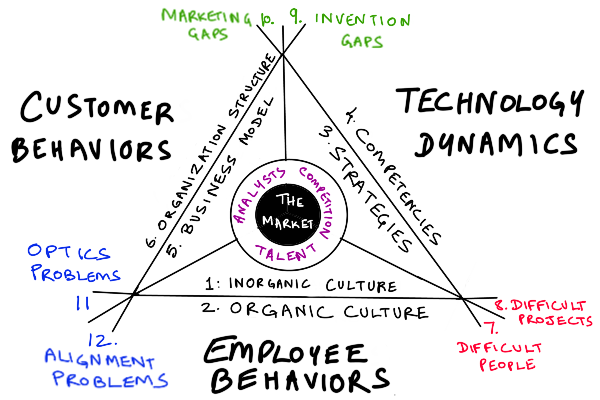

The Twelve Eigenconversations
“Arnie,” I said, “meet my brother, Mycroft Rao, of Diogenes Street.”
Arnie wrinkled his nose, looked around carefully.
“This is a dank back alley with overflowing dumpsters, and that man you’re pointing to is a hobo asleep inside what appears to be a large barrel. Are you trolling me?”
My young friend Arnie Anscombe and I had just walked over from the bar where we’d been chatting about maneuvers versus melees[1]. As you may recall from my account of that chat, our conversation ended with the question of whether there was a fundamental typology of consulting conversations, and I had suggested taking the matter to my older brother Mycroft.
Mycroft opened one eye and glared at Arnie.
“That’s Mister hobo to you, punk.”
He turned to look at me. “Well Junior, haven’t seen you in a while. 2x2s giving you trouble again? Who’s your rude young friend here?”
I sighed. It is hard sometimes, having a genius older brother who insists on living in a barrel behind a dumpster.
“Mycroft, meet my friend Arnie.”
I turned to Arnie, “No, he’s not a hobo. Or at least, not just a hobo. He’s a consultant’s consultant. Never works for clients directly. Believe it or not, he bills out at $25,000 an hour when other consultants call him in.”
Arnie looked at both of us suspiciously. “Yeah right. $25,000 an hour, and he lives in a barrel in a back alley. And he’s a consultant’s consultant, but I’ve never heard of him?”
Mycroft grinned at Arnie. “Two billable hours a year, and I can live more comfortably than you probably do. Three, and I’m saving more for retirement than junior here in his fancy premium mediocre high-rise apartment.”
“So… what, you’re some sort of meta-consultant?”
Mycroft shook his head impatiently, dove back into his barrel, scrounged around, resurfaced with a half-empty bottle of water, took a swig, and glared at Arnie.
Cognitive Infrastructure
“Mycroft prefers the term infraconsultant. Consulting on the cognitive infrastructure of consulting. Bedrock stuff. Operating systems for consultants,” I explained.
“And what infraconsulting do you and your rude young friend here need today, Junior?”
“Well, Arnie and I were just talking about types of conversations you can have with a client. He has been logging all his consulting conversations on a spreadsheet with… what was it?”
“19 objective metrics, and 7 subjective scores,” said Arnie proudly.
“Yeah, that, but he can’t seem to detect any clear patterns, while I…”
“…while you probably tried make up a half-assed 2x2 based on 3 anecdotes, and it didn’t work, huh?”
“It wasn’t that bad. We did figure out why conversations about finance and sales are rare in our kind of consulting: we are about maneuvering, finance and sales are about the melee.”
Mycroft shook his head. “You kids with your data munging and your overthinking. There are only two kinds of consulting conversation, the kind that works, and the kind that doesn’t.”
You have to be patient with Mycroft when he’s playing curmudgeon, and draw him out by piquing his interest. He only lives in a barrel ironically, and the whole “skeezy living, low thinking” pose is just a never-ending long troll of the rest of us.
Arnie opened his mouth to speak, but I gave him a warning glance and shook my head slightly.
Mycroft scowled at Arnie. “So you tried what is it, 19 plus 7, a 27-dimensional bottom-up typology and that didn’t work, big surprise.”
He turned to me, “And you Junior, you tried a 2-dimensional one, and that didn’t work. Another surprise. And you don’t like my one-dimensional typology either. A third surprise. You kids are hard to please.”
“Your one dimension was a rhetorical tautology. Effectively zero dimensions. C’mon Mycroft, cut out the grumbling and give us something useful,” I said. If you let him, he’ll grumble on cynically forever.
Internal Realities, External Realities
“You don’t like my one dimension, so let’s hear yours. If you had to pick just one dimension to classify consulting conversations, what would it be?”
Arnie and I spoke at the same time.
“Internal realities versus external realities,” said Arnie.
“People conversations versus stuff conversations,” I said.
Mycroft nodded approvingly at Arnie.
“That’s good, that’s good. You’d better watch out for Arnie here, Junior. He cuts to the essence quicker than you. People versus stuff is good, but internal versus external is more fundamental. Now, which space of conversations is bigger?”
Arnie frowned, and said, “Is that a trick question? External obviously. The world is bigger than the inside of any single organization.”
Mycroft grinned and looked at me.
I shrugged. When Mycroft throws an obvious trick question at you, you play along.
“Internal obviously, since you’re asking. Now tell us why.”
“How much time, attention, and energy does a typical client devote to modeling the outside world versus the inside world?”
“Okay, fine, inner reality is bigger if you look at it that way, in information content terms. Half of my clients barely think about the outer realities beyond a few cartoon views.”
“It’s not just raw quantity of content, Junior. Where can you get more easily lost in the infinite depths of eternal priceless bullshit? And where do you hit a brick wall of unknowables quickly?”
“I get it, you’ve made your point; all the bikesheds and shaveable yaks are part of inner realities people have constructed for yourself. So that’s the two kinds of conversations? Big conversations about internal realities that can get arbitrarily detailed, small conversations about external realities that end where the unknowns begin and action must start?”
Mycroft smiled brightly. “There you go. Good job, boys! Now go away and leave me alone.”
He tried to crawl back into his barrel, but I caught him by the foot and dragged him out again.
“Yeah, we need something better than that. We could have come up with that ourselves.”
“Fine,” said Mycroft grumpily. “Then you pay.” He held out his hand.
Arnie raised a sarcastic eyebrow at me. “What now? You’re going to pay him $25,000? Or do you get a friends and family rate?”
I shook my head. “No, that’s for support on an actual client gig, and no I don’t get a friends and family rate. This is a conversation about consulting, among consultants, so…”
I sighed, pulled out my wallet, took out the one yak coin I keep in there, and handed it to Mycroft, who grinned and pocketed it.
Arnie stared at me. “Is that one of those yak coins you’re always bragging about? You’re just going to give one to him?” (see The Shadow’s Journey and The Two Shadows of the Hero)
“Don’t worry, I’ll get it back from him the next time he wants to venture out of Diogenes Street and drop by my place for a shower and a fresh shirt.”
“That’s true enough,” said Mycroft. “Okay, you know my methods Junior. I’m thinking of a number. Guess.”
I explained for Arnie’s benefit. “Mycroft here practices the purest form of consulting. He never makes up his own models. He only takes your models, refactors them, and gives them back to you.”
“Steal client’s watch, tell ‘em the time. It’s the One True Way. Now what number am I thinking of?” said Mycroft.
Mapping Conversation Spaces
“Right. So he’s probably thinking of one of my own models. Hmm… let me see, it’s not a 2x2, so my next most favorite construct is a triangle, so I’m going to go with 3. It’s a pick 2 of 3 type triangle.”
Mycroft grinned, reached into his barrel and grabbed a small whiteboard and some colored markers, and drew a large triangle. He’s not entirely averse to using the tools of the trade.
“Almost, but not quite. There’s a 3 in there, and a triangle, but 3 is not the number I’m thinking of. Try again!”
Enlightenment dawned. “Ah, you’re thinking 12. My model from that blog post I wrote about making your own rules[2]. That had an inside/outside scheme to it.
Arnie said, “I remember that. Rather overwrought and thin on the empirical justification I thought. But it was useful, I’ll give you that.”
Mycroft nodded. “Yes, Junior here tends to overdo the runaway platonism, but in that case it worked. That was one of your better models, Junior. I got some very productive thinking done with that. You might make a good infraconsultant yet. In fact, it was good enough that...”
He scrounged around inside his pockets, pulled out the yak coin I had just given him, and handed it back to me.
“…you’ve earned your yak coin back. Now, let’s see if I can recall the details.”
Mycroft closed his eyes briefly, then opened them and scribbled carefully for a few minutes. He has an impressive near-eidetic memory and can remember things I’ve said or written better than I can.
“There.” He said, handing me the whiteboard. “Here’s your conversational typology. Happy? That map is worth more than one yak coin. Worth at least two showers and shirts. Take out your phone and take a picture. I’m going to need that whiteboard back.”

Inevitabilities versus Surprises
Arnie squinted, frowned, and read aloud:
Inorganic culture
Organic culture
Strategies
Competencies
Business models
Organization structure
Difficult people
Difficult projects
Invention gaps
Marketing gaps
Optics problems
Alignment problems
He paused for breath, then continued.
“This is a pretty busy diagram, so let me make sure I’m reading this right. So you’ve got the inside and outside of the triangle. And outside realities are on the inside of the triangle. Well that’s annoying, but I suppose it works. And the market is a black hole at the center.”
“That was a void in Junior’s original model. Clever move, that. Putting the outside on the inside. Annoying but clever. He has his moments.”
“If you say so. Just seems pointlessly idiosyncratic to me. And you have analysts, competitors, and talent serving as three lenses on the market-void? That seems wrong. Shouldn’t customers be at the center?”
“Wrong. The market is the energizing void at the heart of a business, but customers don’t exist except as abstractions you’ve created. Businesses create customers as stable patterns of behavior, as Junior here likes to say[3]. The idea of a customer is part of inner reality. It may or may not reflect the external reality of how the market is actually buying what you sell. It is one of three forcing functions shaping organizational behavior from the inside.”
“Okay, so that’s why customer behaviors is outside one edge of the triangle, and the other two inner realities are employee behaviors and technology dynamics?”
“Correct. All consulting conversations happen at the boundary between inner and outer realities, driven by the three inside-out forcing functions: customer behaviors, employee behaviors, and technology dynamics. The other forcing function is outside-in surprises. That is a good definition of market as it happens: a stream of outside-in surprises.”
“And there are 3 conversation types on the inside of the triangle, relating to market-facing outer realities, and 9 on the outside of the triangle mapping to inner realities? What’s the difference there?”
“What do you think?”
“I’m thinking territory conversations versus map conversations.”
“Correct. But also streams of surprises versus streams of inevitabilities.”
Conversational Tectonics
“What else do you see?” asked Mycroft.
Arnie said, “There’s six kinds of conversations that can happen along the edges, and another six at the corners? What’s the difference? Why are the edge conversations in black and the corner ones in red, green, and blue?”
Mycroft turned to me. “Any guesses, Junior? You came up with the original after all.”
Mycroft has a way of making my own models seem unfamiliar to me. I stared at the drawing.
“Well, uhh.. the six edge conversations… they seem important but not urgent. Inorganic and organic culture…types 1 and 2… I guess 1 is like culture shocks through mergers and acquisitions? Or new employee cohorts, especially leadership ones, versus 2, the native culture? And then you have competencies, which are an internal thing, and strategies, which drive how they play out in the world. That’s 3 and 4, shaped by technology dynamics. And org structure versus business models — stuff you design with org charts on the inside versus models analysts use to interpret the structure from the outside — yeah, I’m going with important but not urgent, which would make the corners urgent but not important maybe?”
“Junior, junior junior…” Mycroft shook his head sadly. “Urgent AND important! As you boys appear to have already discovered, urgent but not important generally means tactical action in sales and finance. Not much room for your kind there. Time constants between weeks to a quarter.”
I kicked myself mentally for not spotting that. “Ah, so urgent AND important conversations happen at the tectonic plate boundaries. And the colors represent the types of urgency. So you’ve got optics and alignment conversations where customer behaviors meets employee behaviors, 11 and 12. You’ve got difficult people/difficult problem conversations where employee behaviors meet technology dynamics, 7 and 8…”
“Those are the inner-reality faultlines, yes. And there are corresponding outer-reality faultlines that can also cause the same corner conversations, but go on.”
Arnie cut in to finish, “… and you get innovation gap conversations and marketing gap conversations where technology dynamics meet customer behaviors, looking inside-out…9 and 10. Or business models colliding with strategies, looking outside-in.”
“INVENTION my boy, INVENTION! Never use the word innovation around me. It’s a word used by bureaucrats to pretend they’re in charge of technology. Invention is fundamental, innovation is bullshit theater!”
Arnie looked like he was about to protest but I silently mouthed NO at him. There are buttons you do not push with Mycroft.
Arnie said, “This is all… suspiciously just-so…And colorful. So you just magically managed to classify conversations into 12 types off the top of your head, and it just happened to fit this triangle framework?”
Conversational Territories
Mycroft turned to Arnie, “You’re a quant type, eh? Neck-deep in eigenvalues and singular values and principal component analysis, eh? I imagine you ran some sort of k-means clustering on your spreadsheet of conversations?”
I grinned, “Watch out, he’s now going to steal your models and tell you the time.”
“Let me ask you, Arnie, why bother with making up frameworks at all? Why bother with clustering data and attaching evocative labels to clusters? Why not just use everyday categories based on functional boundaries? Why not just classify conversations as marketing, sales, engineering, HR, and so forth?”
“Well, complex conversations spill out of superficial boxes pretty quick...”
“What does that tell you about good frameworks?”
“Err… the boxes are better? Conversations spill out of boxes less readily?”
“Exactly, and when they do spill out of a box, if you’ve built the framework well, they will likely flow into a neighboring box rather than just out of the framework altogether, causing a mess.”
“Okay fine, so good frameworks are in some sense, natural. The conform to the contours of conversational flows.”
“They carve reality at the joints,” I chimed in.
“Well, aren’t you kids smart,” said Mycroft. “Now try German-smart.”
Enlightenment dawned on Arnie first. “Ahh, I see, you’re talking about eigenconversations.”
“Wunderbar! Exactly, and depending on the size, scope, and resolution of the framework you build, you’ll end up with a different number of eigenconversations. I just used Junior’s clever 12-rules triangle model for convenience, but others might work as well.”
“Okay, I get it,” I said. “I can see how this typology of 12 conversation types is pretty clean and covers the ground well. But almost no conversation I can recall maps to just one of these.”
“That’s not the point!” said Mycroft sharply. “The point is fast transients in your conversational OODA loop. You don’t want conversations to stay in a box at all. You want them to go where they want go, but track them rapidly. You want to put a map in your head that allows you to plot the course of the conversation…the problem is not that the marketing conversation turned into an org design conversation, but that you didn’t notice and continued treating it like a marketing conversation!”
“…got it, track it to see where it is going, I get it….”
“…and more importantly, where it is not going, but could. Any sufficiently rich conversation will include an element of every possible eigenconversation, and as consultants, it is your job to expand the range of possibilities being explored. If a necessary eigenconversation doesn’t happen spontaneously, you may have to inject it!”
Arnie interrupted, “I can see you two are related. You’ll INTP this to death if I don’t stop you. How about we try an example? How about the Boeing 737 Max case?”
Case Thinking
“I’m INTJ thank you very much. The Boeing case is an excellent choice. A conversation about an acute, systemic crisis should certainly hit every eigenconversation, and also test the framework for obvious gaps. What do we know about what happened? Go!”
“Well, it began with two crashes in a short period and PR crisis…”
“Type 11, an optics problem conversation. People died in the outer reality, but in inner reality, a narrative was threatened, which was triggered an actual reaction.”
“They tried to spin it and blame an outsourcing company, but then it became clear that the core engineering decisions were made within Boeing.”
“Types 1 and 2, inorganic external culture versus organic internal culture. Excellent, that’s 3 of 12 already.”
“Well, then nobody believed them anyway and it looked like they were trying to avoid consequences, and they were faced with order cancellations and fleets being grounded, and the press started digging and uncovered the backstory of competition with Airbus…”
“A marketing gap with Airbus offerings as root cause, Type 10,” I cut in, “that they fixed with a hasty design hack rather than a ground-up redesign — they had to sling bigger engines under the airframe, and then they bolted on that MCAS control system… a sloppy closing of an invention gap to address a marketing gap. Type 9.”
Mycroft beamed at us, “5 eigenconversations of 12, You boys are getting it. But why did Boeing have to half-ass it?”
“We can only speculate, but presumably it was a fundamentally difficult project with impossible trade-offs given the market time pressures. And difficult people were able to drive through bad decisions, because nobody challenged them at key points.”
“7 and 8. Good speculations, though you’d have to talk to Boeing people to verify. But surely as the industry leader, Boeing had the right competencies to tackle difficult projects under competitive pressure? They pretty much invented the industry, and Airbus was late to the party. So why the breakdown?”
“Ah, that would be the competencies conversation, Type 4. Were the engineers good enough? Or had they ceded technology leadership to Airbus engineers?”
“Or could it be that the engineers knew what they were doing, but the competitive posture relied on brute-force sales driving the technology roadmap, rather than a product roadmap driving sales posture?” asked Mycroft?
“Ah that would be the strategy conversation, Type 3!” Arnie cut in.
I looked at the whiteboard, where I’d been keeping track. “So what’s left? What are we missing? Let’s see. We have 5, 6 and 12 left to do if we’re playing bingo here.
“5, business model…” prompted Mycroft.
“They were set up to sell to weakened regulatory agencies like the FAA, and airliner industry executives were probably in bed with regulators in a deeply cronyist, consolidated industry…pilots and passengers were low on the totem pole of stakeholders.”
“6, organization structure…”
“…Clearly there were problems with how planes were sold in Southeast Asia and Africa relative to the developed world. Somewhere, somehow, corners were cut in order to make the sales… necessary technology options were sold as optional… if Boeing can be rescued at all, they’ll probably need reorgs to address that. Maybe a centralized global standards function so regional sales orgs don’t get to mess dangerously with what’s being sold. Reminds me of that Grenell tower fire… that case of fireproof cladding being sold differently in different territories.”
“Good secondary example. And finally, 12, alignment?”
“Somebody somewhere didn’t communicate the safety-critical nature of the technology and training requirements and override capabilities…engineering built one thing, sales sold a different thing, pilots understood a third thing. End result, a bunch of people had to die.”
We stopped to catch our breath and reflect on the inventory.
After a minute, Arnie said, “Wait a minute, we switched gears from using the model to track information about the case at some point, and started looking for data to flesh out parts of the model! That’s confirmation bias! And maybe some overfitting as well!”
“Feature, not bug, my boy!” said Mycroft. “Frameworks are not scientific models. They are meant to do the work of framing. Sometimes you use the phenomenology to lay out the frame, other times, the frame tells you what phenomenology to look for! In consulting, frameworks can be maps that create the territories.”
“That can’t be right. How do we know the framework is exhaustive? How do we know it is not blinding us, and that we’re not missing things?”
“YOU DON’T! You navigate with the model, and when it fails, you look at whether you missed something that despite the framework, in which case you just have to get better at using it, or you missed something because of the framework, in which case you have to…”
“…extend and augment it?”
“NO! That just makes it overwrought and baroque over time! You have to go back and rethink the whole framework again! Back to phenomenology!”
“Rebuild the model, and figure out new eigenconversations if necessary.” I finished.
“There are no fixed truths. Only dead conversations versus live conversations,” said Arnie.
“Conversations that work, and conversations that don’t,” Mycroft finished triumphantly.
- maneuvers versus melees — maneuvers_vs_melees.html
- making your own rules — prelude.html
- as Junior here likes to say — prelude.html